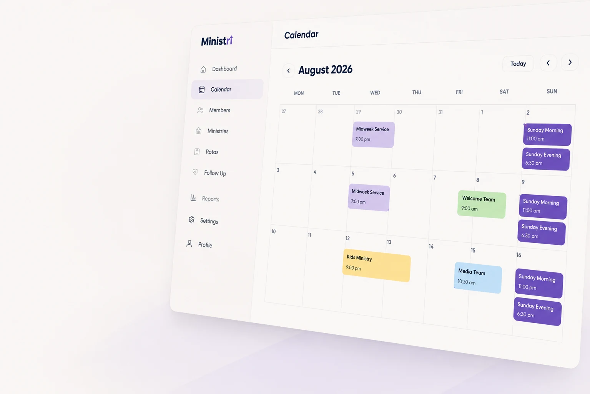

Independent digital products
Thoughtful apps.
Designed with purpose.
We create practical digital tools for productivity, faith, education, church organisation and community support.
Our apps
Useful software, built around real needs.
Each iDesignApps product has its own identity, purpose and experience — connected by a focus on clarity, usefulness and thoughtful design.
Church organisation
Ministri
A practical church ministry platform for managing rotas, ministries, members, communication and the moving parts of church life.
Rotas
Members
Ministries
Visit ministri.app
Christian note-taking
Inscribi
A living library for sermon notes, Bible studies and personal reflection — helping meaningful thoughts stay useful long after they are written.
Notes
Gems
Reflection
Visit inscribi.app
+
More to come
New products are on the way.
iDesignApps is growing. Future digital tools will be added here as they launch.
About iDesignApps
Small studio.
Purposeful products.
iDesignApps develops and sells access to digital applications and software tools designed to support productivity, education, faith, community and organisation.
Our products include mobile and web applications for Christian note-taking and personal reflection, church ministry management, education, productivity and community support.
We offer a mixture of free and paid digital services, including subscriptions, one-time purchases, premium features, software setup services and ongoing support.
Useful first
Features should solve a real problem, not exist just to make a product feel bigger.
Clear by design
Good software should feel understandable, approachable and easy to move through.
Built to grow
Products can start focused, then develop thoughtfully as their communities grow.
Contact
Want to know more?
Visit one of our product websites for app-specific information. General iDesignApps contact details will be added here soon.